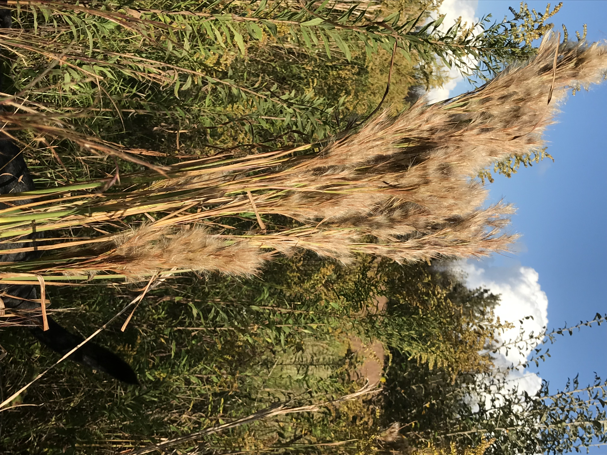

October Flowers
All images were taken in October in Alabama, by me, with a phone.
Legacy
Located in the Deep South, sometimes referred to as "Dixie" or
"The Land of Sunshine and Flowers" (that's really a thing!),
Alabama has a storied history, involving freedom, slavery, treason, and harrowing war.
Fortunately, the flowers are alive and history is dead.
Weeds, but interesting
Alabama wildflowers bloom nearly year-round, because of the mild winters and moist climate.
Above, Yellow
Below that, a single purple flower.